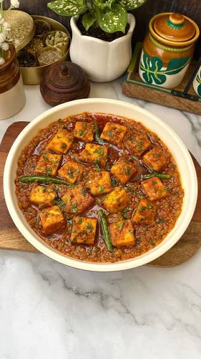

Panner Masala
Back to Main Page

Description
Paneer Masala is a popular North Indian vegetarian dish featuring succulent cubes of paneer (Indian cottage cheese) simmered in a deeply aromatic, highly seasoned onion-tomato gravy. It is celebrated for its balanced heat and complex profile of traditional spices.
Ingredients
- Paneer (Indian cottage cheese, cubed)
- Oil or ghee
- Onions (finely chopped)
- Tomatoes (pureed or finely chopped)
- Ginger-garlic paste
- Spices (turmeric, red chili powder, coriander powder, garam masala)
- Kasuri methi (dried fenugreek leaves)
- Salt
- Water
- Fresh coriander (cilantro, optional for garnish)
Steps
- Sear paneer cubes in a pan with a little oil until lightly golden, then set aside
- Sauté onions in oil or ghee over medium heat until they turn golden brown
- Add ginger-garlic paste and fry for 1 minute until the raw smell disappears
- Pour tomato puree into the pan and cook until the oil starts separating from the masala
- Stir in spices (turmeric, chili, coriander powder, and salt) and cook for another minute
- Add water to adjust the gravy thickness and bring it to a gentle simmer
- Slide in paneer cubes and simmer covered for 3–4 minutes so they absorb the flavors
- Finish the dish by stirring in garam masala and crushed kasuri methi
- Garnish with fresh coriander and serve hot